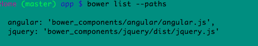

Command-Line Fun! --Vocabulary and Tricks
mkdir
touch
cd ../../folder name/folder name
clear
ls -a
lists all files even those beginning with a dot
In addition to -a, the ls command has several more options. Here are three common options:
-a - lists all contents, including hidden files and directories
-l - lists all contents of a directory in long format
-t - order files and directories by the time they were last modified.
-alt is a combination of all of them together
cp filename filename
This copies the directory of one file into another
cp's second parameter can be a directory...a target directory to move the copied file.
cp * foldername
cp shoplist.txt ../todofolder
mv
rm
head filenametop portion of file
tail filenamebottom portion of file
cat filenameentire file
curl
curl http://localhost:3000 // once running a local server, use this command in another window/tab of Terminal
ping
ping + ip address
traceroute
traceroute + ip address like google 8.8.8.8
cat filename | grep "word-to-search"
cat WordsDB.json | grep "thunder"
cd ~
move directly to HOME
<
< takes the standard input from the file on the right and inputs it into the program on the left.
ls -lah
list allfiles humanReadable
bower list -->lists all dependencies and all stuff installed
bower uninstall jquery --save --> unstalls it and "--save" takes it out of our JSON file
bower list --paths --> lists the paths used in html
Here are some paths used by html

sudo npm install graceful -g npm@latest
npm@latest fixes warnings and updates to latest version
"save-dev"